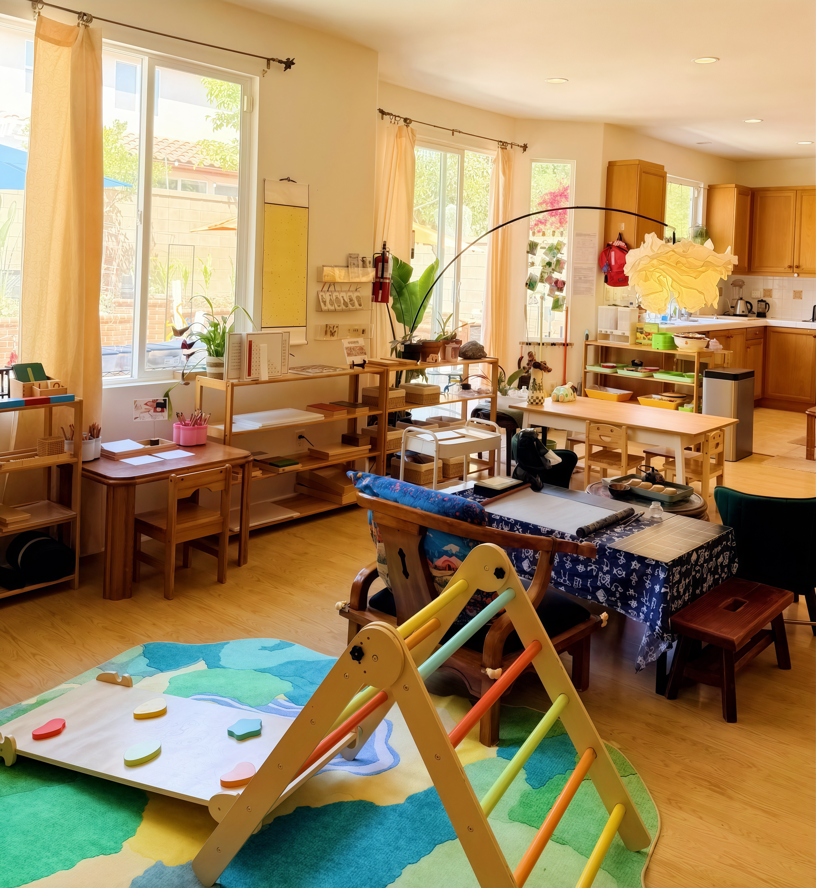
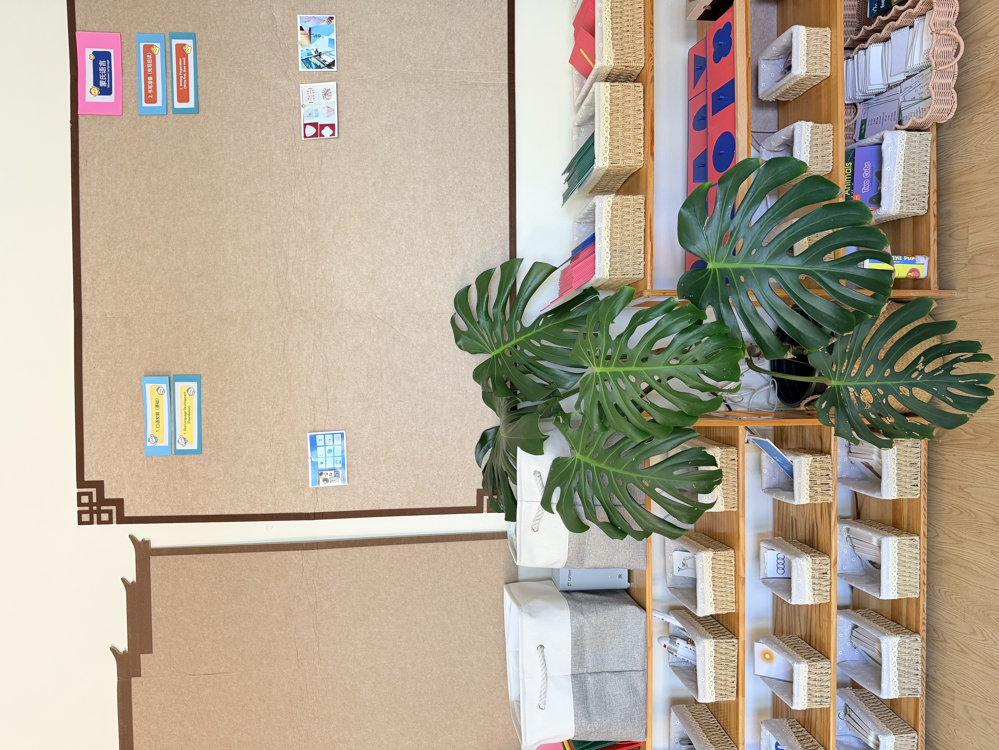
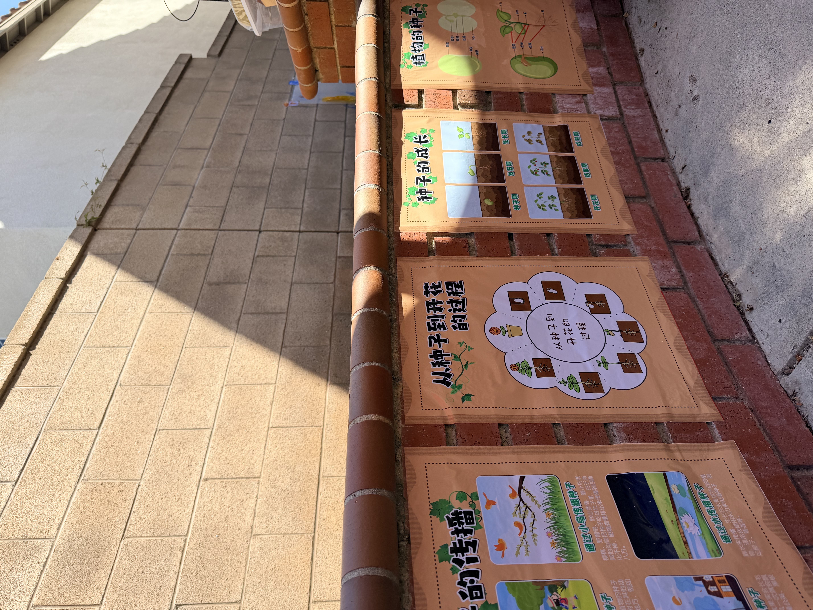
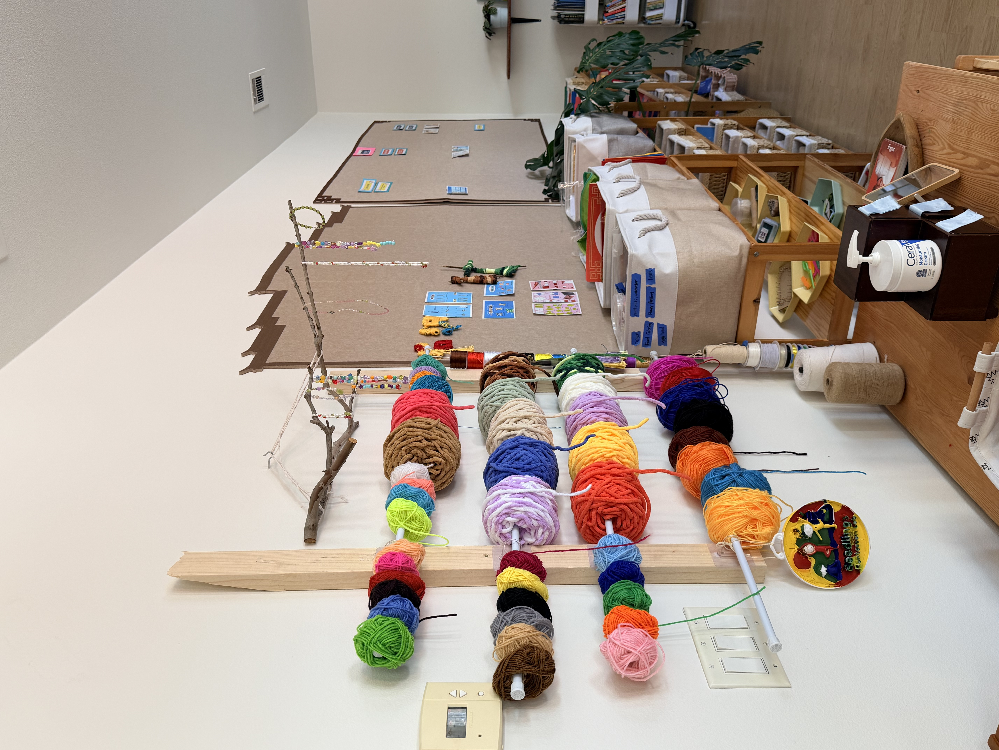
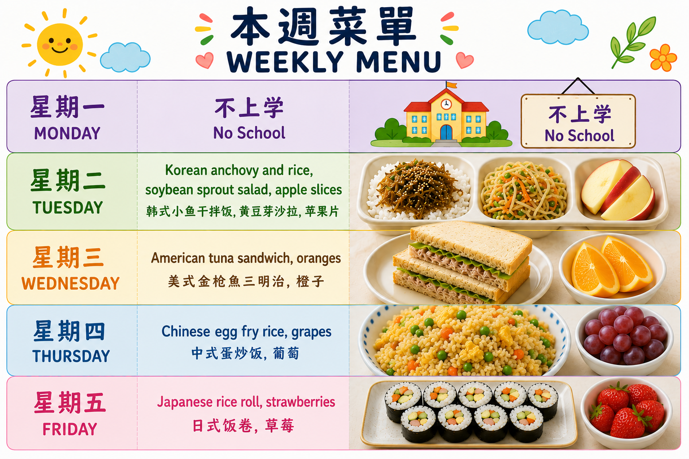
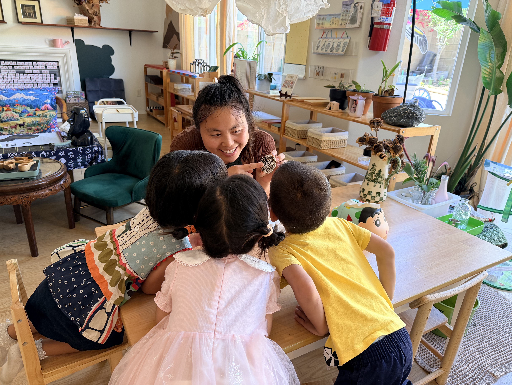
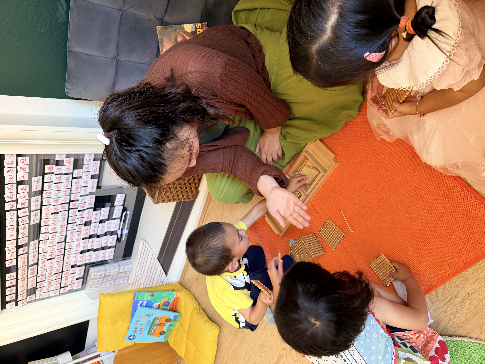

Authentic Montessori in Irvine
Raising future-ready children in an AI-driven world.
Seedlings Montessori is a home-based Montessori school in Irvine, California, where children grow through hands-on learning, nature-based experiences, and a caring community that nurtures independence, creativity, and critical thinking.
About us
Authentic Montessori rooted in nature, community, and joyful discovery.
At Seedlings Montessori Lab, Montessori education is enriched by gardens, animals, outdoor exploration, and meaningful real-life work. Children care for chickens, bunnies, birds, and guinea pigs while building responsibility, empathy, and respect for all living things.
Programs
Explore the prepared environments, daily rhythms, and hands-on experiences that shape learning at Seedlings.
Infant Nido
A gentle beginning focused on connection, observation, movement, and trust.
Toddler Community
Low-ratio, practical life learning where independence and first friendships begin.
Primary
A 2.5-6 year old classroom for independence, concentration, early academics, and community care.
Parent and Me
A guided parent-child experience with observation, practical tools, and Montessori education for home.
Outdoor Explorer
Sand, water, gardening, woodworking, outdoor art, and movement in a prepared nature atelier.
Admission
Step I
Reach out to begin the conversation and share your child's age, schedule needs, and any questions you have about Montessori, our environment, or your family's transition.
Step II
Visit the classroom through a tour, volunteer visit, or parent-child experience so you can see Montessori in action and decide whether Seedlings feels like the right fit.
Step III
Complete enrollment and next-step details so we can prepare a smooth, individualized, and welcoming start for your child and family.
Tuition
2026-2027 monthly tuition and enrollment fees.
Infant & Toddler
12-30 months
- 8:00 AM-12:30 PM$2,000 / month5 half days
- 8:00 AM-3:30 PM$2,200 / month5 full days
- 8:00 AM-4:30 PM$2,400 / month5 full days
- 7:00 AM-6:00 PM$2,600 / month5 full days
Preschool
2.5-6 years
- 8:00 AM-12:30 PM$1,800 / month5 half days
- 8:00 AM-3:30 PM$2,000 / month5 full days
- 8:00 AM-4:30 PM$2,200 / month5 full days
- 7:00 AM-6:00 PM$2,400 / month5 full days
Fees & Policy
- Hourly occasional daycare: $15 / hour.
- Enrollment fee: $225 for Infant, Toddler, and Primary.
- Kindergarten enrollment fee: $350.
- 5% sibling discount applied to the lower tuition.
- Tuition is collected by ACH debit through Tuition Express.
- A 1-month written notice is required for withdrawal.
Calendar
Swipe by month. Crossed-out dates are no-school days from our calendar.
Crossed-out date: no school / closed.
Contact us
seedlingsmontessorilab@gmail.com
11 Iron Springs, Irvine, CA 92602


Schedule a tour
Choose a time that works for your family.